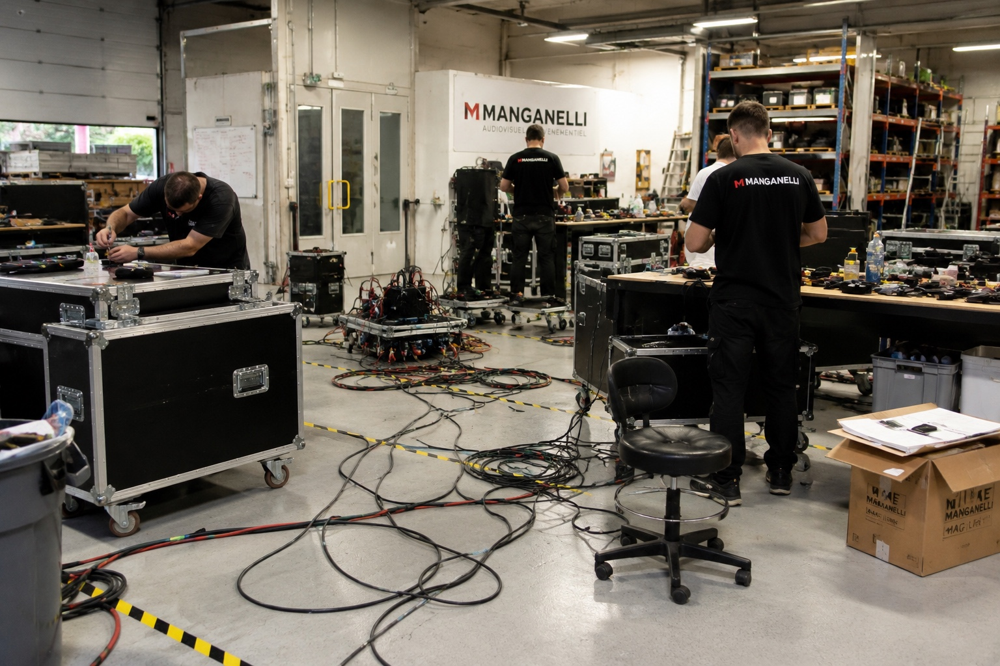

MANGANELLI — Préparer, réaliser et restituer une inspection SSCT à distance
Les participants incarnent une équipe CSE chargée d’organiser une inspection SSCT chez MANGANELLI. Ils doivent construire la méthode, choisir les bons documents, observer des scènes réalistes, distinguer faits et jugements, puis préparer le rapport.
Support basé sur les documents fournis : planning annuel d’inspection, grille de relevé terrain et rapport de visite.

Déverrouillez l’accès à l’atelier final en réussissant les étapes de préparation.